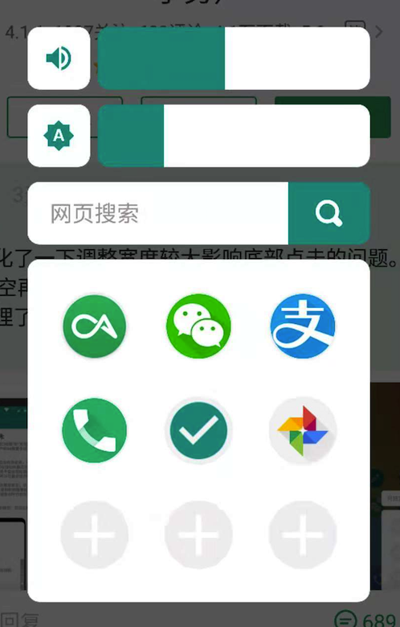

MyGesture高级功能和插件使用说明
一、 高级功能包含的内容:
- 通过手势返回上一个应用
- 通过手势打开指定应用
- 通过手势打开一个扩展面板，面板内可以自定义更多便捷操作，如：打开某个常用应用、调节音量、调节亮度、快速进行网页搜索。
- 自然的窗口级过渡动画效果，不同滑动方向配合不同窗口变化效果，让手势操作的体验大大提高。
- 边缘触发阴影动画自定义调整，不喜欢默认黑影就自定义更加丰富的色彩吧，让手势操作更有趣味。
二、高级功能使用说明：
为了保证MyGesture的简约高效、占用内存小的特点，高级功能通过插件实现。插件无需常驻内存，可以即用即销毁，不影响MyGesture的高效、省电、小运存的特性。高级功能需要安装插件并激活后可用。
- 【扩展面板】在任意界面，可以通过手势呼出扩展面板，在面板里，你可以打开你所设置的常用应用，亦可调节音量、调节亮度、快速进行网页搜索等。

- 【上一个应用】可以使用默认底边缘左有滑动来回切换上一个应用和当前应用。也可以自定义手势里选择一个手势来切换上一个应用。
- 【指定应用】可以通过手势直接呼出某个你所设定的应用或者快捷方式。（这个指定应用为扩展面板里设置的第一个应用，比如你扩展面板设置的第一个应用是微信，那么你通过手势呼出指定应用的时候打开的就是微信（此操作不显示面板，直接打开你所设定的应用））。
- 过渡动画现有两种可选：跟随手势平移和跟随手势缩放，后续会增加。
- 边缘阴影的自定义：现包含颜色、透明度、宽度调整。如果大家喜欢后续会增加一些好玩的东西，如每次操作随机颜色，不同边缘不同颜色，或者周一到周日不同变化，或者不同心情不同变化（想象中）。。。
三、激活说明
- 激活高级功能，您只需向开发者的支付宝转账8元，然后加支付宝好友发送机器码给我，我会回复激活码给您。若应用内捐赠按钮无法调起加好友界面，可以通过支付宝扫码。（保存此图，支付宝扫码选择相册图片就可以）
- 因安卓系统机型太多没法一一测试，不保证所有高级功能都可以有效工作于所有的机型之上（当然都是基于安卓api开发的，绝大部分的机型都可以得到完整支持，有问题的可以去酷安评论去留言）。
- 激活码和机器码一一对应，只发一次，请妥善保存和备份，发送激活码后不退款，谢谢！
- 我真的没有时间做客服，有时间我会花在写代码优化应用上，请谅解！支付宝加好友是为了方便及时发送激活码，好友一段时间后会清理的，软件使用问题请去酷安评论区或微博留言(不一定有时间一一回复，但都会看，反馈的BUG会尽快修复)，介意者请谨慎激活，谢谢配合！